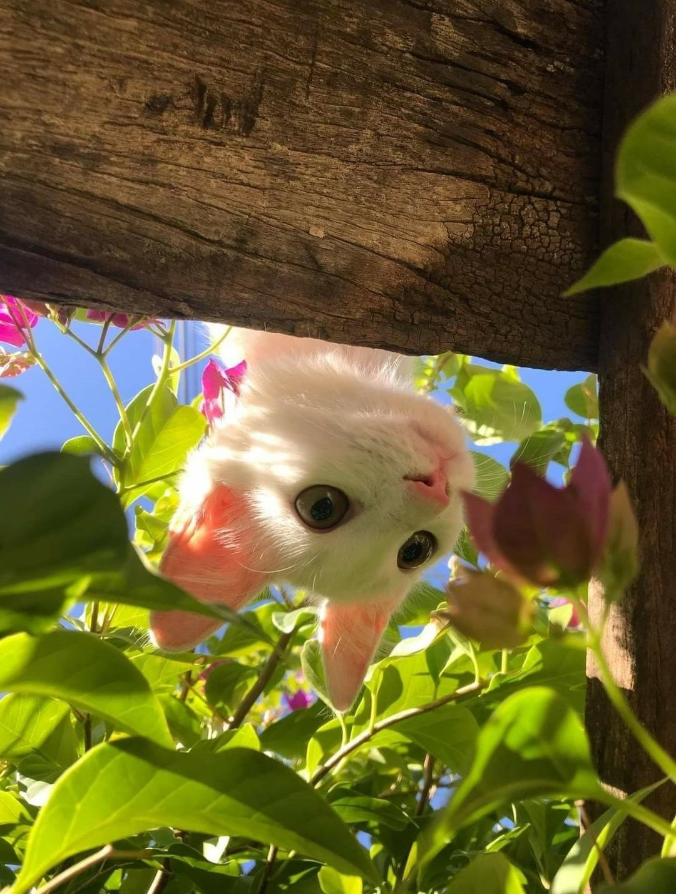
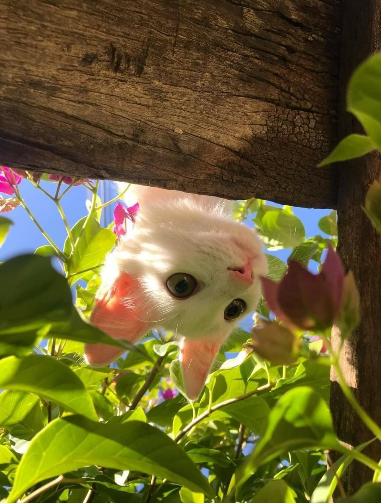
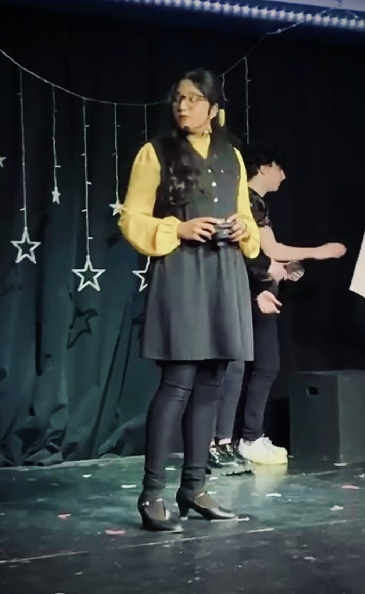
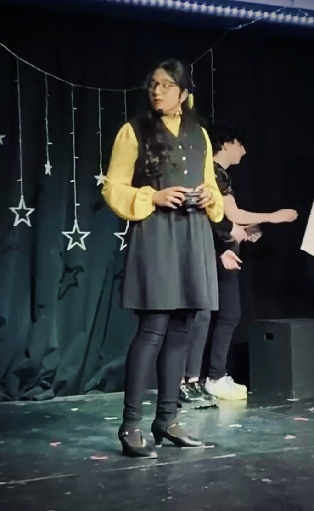

About Us
Huda Ayaz
My name is Huda Ayaz and I am currently a junior at Brooklyn College majoring in Multimedia Computing. I was born and raised in Brooklyn, New York and now live in Long Island. My first experience with coding was in my 9th grade of high school, when I took an Intro to Programming class and thought I would never touch programming again. And yet throughout high school, I found myself coding in many places, often where I would not expect it, particularly through Python in data science. Coming into college, I tried out my first Intro to Java course and found that I enjoyed it a lot. Although I have only been properly learning to code for the last year or so, I have since learned full stack engineering and am continuing to explore more of what the tech field holds.
10 Things Huda Wants to Accomplish Before She Dies
- Travel to Switzerland
- Write a lot
- Get a cat
- Code for positive impact
- Work on things I'm passionate about
- Try many foods
- Sleep well
- Stay healthy
- Stay close to family
- Enjoy
Huda's Dream Careers
| CAREER | DESCRIPTION | REQUIREMENTS |
| Software Engineer | Code to create software | Must have a Bachelor's degree in Software Engineering or a related field. |
| Author | Write poetry, prose, novels, or other such media | Must have extensive experience in writing in a variety of genres and settings. |
| Product Manager | Maintain a team to build toward a final product | Must have experience in the tech field and in leadership. |
 

Royta Iftakher
My name is Royta Iftakher and I'm a senior at Brooklyn College majoring in Computer Science, with a minor in Multimedia Computer Science. I'm from Queens, New York, but I've lived in Staten Island, Brooklyn, and even the bronx for a short period of time. The first time I ever programmed something was in 10th grade, where I took AP Computer Science Principles. In that course I worked with Scratch and Processing and after passing, I never considered I would be coming back to them again all these years later. I've got a love-hate relationship with programming. I love seeing the fruits of my code, but I absolutely hate when something doesnt work and I have to spend hours researching why! Lucky for me, I enjoy it more often than I'm frustrated.
10 Things Royta Wants to Accomplish Before She Dies
- Be Happy
- Have a balcony wherever I live
- Make sure everything I own is some shade of pink
- Travel to every state in the US
- Publish a book (any book)
- Buy a house
- Produce a music album
- Perform on broadway
- Program a robotic cat
- Retire
Royta's Dream Careers
| CAREER | DESCRIPTION | REQUIREMENTS |
| Software Engineer | Codes | Must be proficient in coding. Codes for half the day |
| Actress | Performs on stage | Singing in a broadway musical |
| Travel Blogger | Travels the world, takes pictures, eats food | Have to be able to write. Need a blog. |
 
